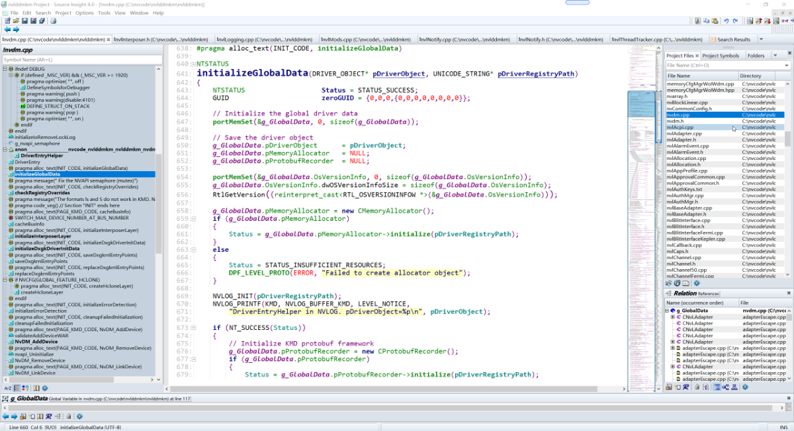
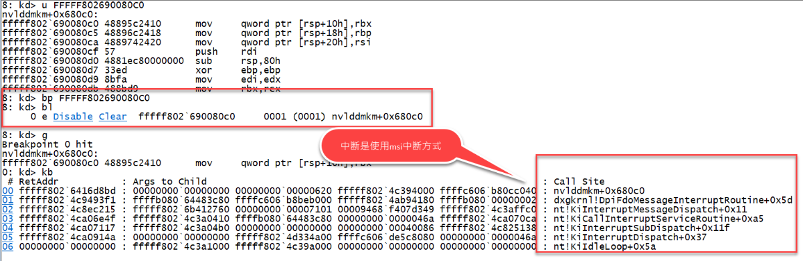

nvidia Windows显卡驱动代码分析
BTC挖矿让英伟达飞起来了，当然也与英伟达在并行计算机领域的强大技术能力有关。这次国外黑客把英伟达的代码公开给大家。让中国人有机会一睹英伟达的显卡驱动的芳容。
此贴就重点来研究一下英伟达windows驱动代码。显卡驱动对许多人来说还是比较神密的。首先做PC显卡的就那三家：nvidia,intel,amd。这就造成了windows显卡驱动几乎没什么人接触，研究。即使是做游戏辅助的人也很少观注显卡驱动本身。
本帖就以号称显卡技术巅峰的nvidia驱动为研究对象进行剖析，以此来抛砖引玉。
源代码下载链接就不提供了，大家可以自行谷歌，非常好找。
剖析的方式包括分析源代码，ida逆向binary驱动，windbg调试硬件，相互佐证代码的真实性。
如下图所示，为了安全起见，建议放在vmware虚拟机进行解压，分析，原因是黑客可能在某些脚本里植入有病毒（当然不去执行里面的代码是没问题的）
第1步，先把代码载入source insight里

第2步，找出驱动的入口点DriverEntry
很明显代码是用C++编写，也用到了很多的类及模板
初始化部分代码很长，分段分析

 现在来看一下最重要的函数DxgkInitialize的具体流程
现在来看一下最重要的函数DxgkInitialize的具体流程
 流程结束
流程结束
现在来看一下nvdia真实显卡驱动的二进制分析 配置好调试环境，用windbg连上 定位驱动
4: kd> lm
start end module name
fffff802`4b000000 fffff802`4b01d000 NDProxy (deferred)
fffff802`4b020000 fffff802`4b048000 AgileVpn (deferred)
fffff802`4b050000 fffff802`4b071000 rasl2tp (deferred)
fffff802`4b080000 fffff802`4b0a1000 raspptp (deferred)
fffff802`4b0b0000 fffff802`4b0cc000 raspppoe (deferred)
fffff802`4b0d0000 fffff802`4b0df000 ndistapi (deferred)
fffff802`4b0e0000 fffff802`4b11b000 ndiswan (deferred)
fffff802`4b120000 fffff802`4b168000 winnat (deferred)
fffff802`4b170000 fffff802`4b18b000 WdNisDrv (deferred)
fffff802`4b190000 fffff802`4b1b6000 MpKslDrv (deferred)
fffff802`4b1c0000 fffff802`4b1cf000 terminpt (deferred)
fffff802`4b1d0000 fffff802`4b2a6000 peauth (deferred)
fffff802`4b2b0000 fffff802`4b2b9000 SangforDnsDrv (deferred)
fffff802`4b2c0000 fffff802`4b2cf000 SangforTcpDrv (deferred)
fffff802`4b2d0000 fffff802`4b2e5000 tcpipreg (deferred)
fffff802`4b2f0000 fffff802`4b3b7000 srv2 (deferred)
fffff802`4b3c0000 fffff802`4b3d2000 xlwfp (deferred)
fffff802`4b3e0000 fffff802`4b3fc000 rassstp (deferred)
fffff802`4bec0000 fffff802`4bec6000 hal (deferred)
fffff802`4bed0000 fffff802`4bf32000 kd_02_10ec (deferred)
fffff802`4bf40000 fffff802`4bf89000 kdcom (deferred)
fffff802`4bf90000 fffff802`4bfb7000 tm (deferred)
fffff802`4bfc0000 fffff802`4bfda000 PSHED (deferred)
fffff802`4bfe0000 fffff802`4bfeb000 BOOTVID (deferred)
fffff802`4bff0000 fffff802`4bffe000 cmimcext (deferred)
fffff802`4c60e000 fffff802`4d654000 nt (pdb symbols) C:\Program Files (x86)\Windows Kits\10\Debuggers\x64\sym\ntkrnlmp.pdb\118018959D8D7CA5AAB45B75AED5A9761\ntkrnlmp.pdb
fffff802`4d800000 fffff802`4d86b000 CLFS (deferred)
fffff802`4d870000 fffff802`4d984000 clipsp (deferred)
fffff802`4d990000 fffff802`4d9ff000 FLTMGR (deferred)
fffff802`4da00000 fffff802`4da29000 ksecdd (deferred)
fffff802`4da30000 fffff802`4da91000 msrpc (deferred)
fffff802`4daa0000 fffff802`4dab1000 werkernel (deferred)
fffff802`4dac0000 fffff802`4dacc000 ntosext (deferred)
fffff802`4dad0000 fffff802`4dbb5000 CI (deferred)
fffff802`4dbc0000 fffff802`4dc7b000 cng (deferred)
fffff802`4dc80000 fffff802`4dd21000 VerifierExt (deferred)
fffff802`4dd30000 fffff802`4de01000 Wdf01000 (deferred)
fffff802`4de10000 fffff802`4de23000 WDFLDR (deferred)
fffff802`4de30000 fffff802`4de3f000 SleepStudyHelper (deferred)
fffff802`4de40000 fffff802`4de51000 WppRecorder (deferred)
fffff802`4de60000 fffff802`4de86000 acpiex (deferred)
fffff802`4de90000 fffff802`4dee6000 mssecflt (deferred)
fffff802`4def0000 fffff802`4df0a000 SgrmAgent (deferred)
fffff802`4df10000 fffff802`4dfdc000 ACPI (deferred)
fffff802`4dfe0000 fffff802`4dfec000 WMILIB (deferred)
fffff802`4dff0000 fffff802`4dffb000 IntelTA (deferred)
fffff802`4e020000 fffff802`4e08b000 intelpep (deferred)
fffff802`4e090000 fffff802`4e0a7000 WindowsTrustedRT (deferred)
fffff802`4e0b0000 fffff802`4e0bb000 WindowsTrustedRTProxy (deferred)
fffff802`4e0c0000 fffff802`4e0d4000 pcw (deferred)
fffff802`4e0e0000 fffff802`4e0f9000 MSDMFilt (deferred)
fffff802`4e100000 fffff802`4e10b000 msisadrv (deferred)
fffff802`4e110000 fffff802`4e187000 pci (deferred)
fffff802`4e190000 fffff802`4e1a5000 vdrvroot (deferred)
fffff802`4e1b0000 fffff802`4e1df000 pdc (deferred)
fffff802`4e1e0000 fffff802`4e1f9000 CEA (deferred)
fffff802`4e200000 fffff802`4e231000 partmgr (deferred)
fffff802`4e240000 fffff802`4e2eb000 spaceport (deferred)
fffff802`4e2f0000 fffff802`4e309000 volmgr (deferred)
fffff802`4e310000 fffff802`4e373000 volmgrx (deferred)
fffff802`4e380000 fffff802`4e39e000 mountmgr (deferred)
fffff802`4e3a0000 fffff802`4e3d2000 storahci (deferred)
fffff802`4e3e0000 fffff802`4e494000 storport (deferred)
fffff802`4e4a0000 fffff802`4e4cd000 stornvme (deferred)
fffff802`4e4d0000 fffff802`4e4ec000 EhStorClass (deferred)
fffff802`4e4f0000 fffff802`4e50a000 fileinfo (deferred)
fffff802`4e510000 fffff802`4e550000 Wof (deferred)
fffff802`4e560000 fffff802`4e5ce000 WdFilter (deferred)
fffff802`4e5d0000 fffff802`4e8a9000 Ntfs (deferred)
fffff802`4e8b0000 fffff802`4e8bd000 Fs_Rec (deferred)
fffff802`4e8c0000 fffff802`4ea2f000 ndis (deferred)
fffff802`4ea30000 fffff802`4eac8000 NETIO (deferred)
fffff802`4ead0000 fffff802`4eb02000 ksecpkg (deferred)
fffff802`4eb10000 fffff802`4edfc000 tcpip (deferred)
fffff802`4ee00000 fffff802`4ee7f000 fwpkclnt (deferred)
fffff802`4ee80000 fffff802`4eeb0000 wfplwfs (deferred)
fffff802`4eec0000 fffff802`4eed0000 VmsProxy (deferred)
fffff802`4eee0000 fffff802`4ef04000 vmbkmclr (deferred)
fffff802`4ef10000 fffff802`4ef1f000 VmsProxyHNic (deferred)
fffff802`4ef20000 fffff802`4efe8000 fvevol (deferred)
fffff802`4eff0000 fffff802`4effb000 volume (deferred)
fffff802`4f000000 fffff802`4f06d000 volsnap (deferred)
fffff802`4f070000 fffff802`4f0c0000 rdyboost (deferred)
fffff802`4f0d0000 fffff802`4f0f6000 mup (deferred)
fffff802`4f100000 fffff802`4f112000 iorate (deferred)
fffff802`4f140000 fffff802`4f15c000 disk (deferred)
fffff802`4f160000 fffff802`4f1cc000 CLASSPNP (deferred)
fffff802`64000000 fffff802`64054000 srvnet (deferred)
fffff802`640c0000 fffff802`640f0000 cdrom (deferred)
fffff802`64100000 fffff802`64115000 filecrypt (deferred)
fffff802`64120000 fffff802`6412e000 tbs (deferred)
fffff802`64130000 fffff802`6413a000 Null (deferred)
fffff802`64140000 fffff802`6414a000 Beep (deferred)
fffff802`64150000 fffff802`6415d000 button (deferred)
fffff802`64160000 fffff802`6450a000 dxgkrnl (deferred)
fffff802`64510000 fffff802`64528000 watchdog (deferred)
fffff802`64530000 fffff802`64546000 BasicDisplay (deferred)
fffff802`64550000 fffff802`64561000 BasicRender (deferred)
fffff802`64570000 fffff802`6458c000 Npfs (deferred)
fffff802`64590000 fffff802`645a1000 Msfs (deferred)
fffff802`645b0000 fffff802`645ce000 CimFS (deferred)
fffff802`645d0000 fffff802`645f2000 tdx (deferred)
fffff802`64600000 fffff802`64610000 TDI (deferred)
fffff802`64620000 fffff802`6467c000 netbt (deferred)
fffff802`64680000 fffff802`64695000 afunix (deferred)
fffff802`646a0000 fffff802`64745000 afd (deferred)
fffff802`64750000 fffff802`6476a000 vwififlt (deferred)
fffff802`64770000 fffff802`648ef000 vfpext (deferred)
fffff802`648f0000 fffff802`6491b000 pacer (deferred)
fffff802`64920000 fffff802`64934000 ndiscap (deferred)
fffff802`64940000 fffff802`64954000 netbios (deferred)
fffff802`64960000 fffff802`64a01000 Vid (deferred)
fffff802`64a10000 fffff802`64a31000 winhvr (deferred)
fffff802`64a40000 fffff802`64a5c000 vbdenum (deferred)
fffff802`64a60000 fffff802`64adc000 rdbss (deferred)
fffff802`64ae0000 fffff802`64b77000 csc (deferred)
fffff802`64b80000 fffff802`64b8c000 XLGuard (deferred)
fffff802`64b90000 fffff802`64ba2000 nsiproxy (deferred)
fffff802`64bb0000 fffff802`64bbe000 npsvctrig (deferred)
fffff802`64bc0000 fffff802`64bd0000 mssmbios (deferred)
fffff802`64be0000 fffff802`64bea000 gpuenergydrv (deferred)
fffff802`64bf0000 fffff802`64c1c000 dfsc (deferred)
fffff802`64c40000 fffff802`64cac000 fastfat (deferred)
fffff802`64cb0000 fffff802`64cc7000 bam (deferred)
fffff802`64cd0000 fffff802`64d1e000 ahcache (deferred)
fffff802`64d20000 fffff802`64d68000 vmbusr (deferred)
fffff802`64d70000 fffff802`64d9a000 hvsocket (deferred)
fffff802`64da0000 fffff802`64f27000 HTTP (deferred)
fffff802`64f30000 fffff802`64f63000 mqac (deferred)
fffff802`64f70000 fffff802`64f97000 Ndu (deferred)
fffff802`64fe0000 fffff802`64ffe000 crashdmp (deferred)
fffff802`65400000 fffff802`65456000 msquic (deferred)
fffff802`65460000 fffff802`654f4000 mrxsmb (deferred)
fffff802`65500000 fffff802`65545000 mrxsmb20 (deferred)
fffff802`65550000 fffff802`6555d000 hvsocketcontrol (deferred)
fffff802`65560000 fffff802`65578000 lltdio (deferred)
fffff802`65580000 fffff802`6559b000 rspndr (deferred)
fffff802`655a0000 fffff802`655b8000 mslldp (deferred)
fffff802`655c0000 fffff802`655dd000 wanarp (deferred)
fffff802`655e0000 fffff802`655fa000 mpsdrv (deferred)
fffff802`65600000 fffff802`65623000 ctxusbmon (deferred)
fffff802`65630000 fffff802`65644000 mmcss (deferred)
fffff802`65670000 fffff802`658e0000 vmswitch (deferred)
fffff802`658f0000 fffff802`658fc000 SangforVnic (deferred)
fffff802`65900000 fffff802`65912000 CompositeBus (deferred)
fffff802`65920000 fffff802`6592d000 kdnic (pdb symbols) C:\Program Files (x86)\Windows Kits\10\Debuggers\x64\sym\kdnic.pdb\903528AB60550849494D3C6B210229B31\kdnic.pdb
fffff802`65930000 fffff802`65945000 umbus (deferred)
fffff802`65950000 fffff802`6595c000 wmiacpi (deferred)
fffff802`65960000 fffff802`659e2000 cldflt (deferred)
fffff802`68000000 fffff802`68044000 ucx01000 (deferred)
fffff802`68050000 fffff802`68082000 iaLPSS2_I2C_TGL (deferred)
fffff802`68090000 fffff802`680aa000 SpbCx (deferred)
fffff802`680b0000 fffff802`680fc000 TeeDriverW10x64 (deferred)
fffff802`68100000 fffff802`6811c000 serial (deferred)
fffff802`68120000 fffff802`6812f000 serenum (deferred)
fffff802`68130000 fffff802`6813c000 acpitime (deferred)
fffff802`68140000 fffff802`68160000 iaLPSS2_GPIO2_TGL (deferred)
fffff802`68170000 fffff802`681a2000 msgpioclx (deferred)
fffff802`681b0000 fffff802`681f0000 intelppm (deferred)
fffff802`68200000 fffff802`6820b000 acpipagr (deferred)
fffff802`68210000 fffff802`6821e000 UEFI (deferred)
fffff802`68220000 fffff802`68257000 vpcivsp (deferred)
fffff802`68260000 fffff802`68292000 storvsp (deferred)
fffff802`682a0000 fffff802`682b0000 nvvad64v (deferred)
fffff802`682c0000 fffff802`682cf000 ksthunk (deferred)
fffff802`682d0000 fffff802`682dd000 NvModuleTracker (deferred)
fffff802`682e0000 fffff802`682f0000 nvvhci (deferred)
fffff802`68300000 fffff802`68309000 Synth3dVsp (deferred)
fffff802`68310000 fffff802`6831d000 NdisVirtualBus (deferred)
fffff802`68320000 fffff802`6832c000 swenum (deferred)
fffff802`68330000 fffff802`6833e000 rdpbus (deferred)
fffff802`68340000 fffff802`6836f000 rdpdr (deferred)
fffff802`68370000 fffff802`68397000 tsusbhub (deferred)
fffff802`683a0000 fffff802`68443000 UsbHub3 (deferred)
fffff802`68450000 fffff802`6845e000 USBD (deferred)
fffff802`68460000 fffff802`68483000 nvhda64v (deferred)
fffff802`68490000 fffff802`68aca000 RTKVHD64 (deferred)
fffff802`68ad0000 fffff802`68b03000 usbccgp (deferred)
fffff802`68b10000 fffff802`68b22000 hidusb (deferred)
fffff802`68b30000 fffff802`68b6f000 HIDCLASS (deferred)
fffff802`68b70000 fffff802`68b83000 HIDPARSE (deferred)
fffff802`68b90000 fffff802`68ba1000 kbdhid (deferred)
fffff802`68bb0000 fffff802`68bc4000 kbdclass (deferred)
fffff802`68bd0000 fffff802`68be0000 mouhid (deferred)
fffff802`68bf0000 fffff802`68c03000 mouclass (deferred)
fffff802`68c10000 fffff802`68c30000 WinUSB (deferred)
fffff802`68c50000 fffff802`68c5e000 dump_dumpstorport (deferred)
fffff802`68c90000 fffff802`68cbd000 dump_stornvme (deferred)
fffff802`68ce0000 fffff802`68cfd000 dump_dumpfve (deferred)
fffff802`68d00000 fffff802`68de1000 dxgmms2 (deferred)
fffff802`68df0000 fffff802`68e0b000 monitor (deferred)
fffff802`68e10000 fffff802`68e64000 WUDFRd (deferred)
fffff802`68e70000 fffff802`68e82000 IndirectKmd (deferred)
fffff802`68e90000 fffff802`68eae000 hvservice (deferred)
fffff802`68eb0000 fffff802`68ed5000 bowser (deferred)
fffff802`68ee0000 fffff802`68f16000 wcifs (deferred)
fffff802`68f20000 fffff802`68f2d000 rdpvideominiport (deferred)
fffff802`68f30000 fffff802`68f4a000 storqosflt (deferred)
fffff802`68f50000 fffff802`68f78000 bindflt (deferred)
fffff802`68f80000 fffff802`68f92000 condrv (deferred)
**fffff802`68fa0000 fffff802`6b406000 nvlddmkm (deferred)**
fffff802`6b410000 fffff802`6b435000 HDAudBus (deferred)
fffff802`6b440000 fffff802`6b4a6000 portcls (deferred)
fffff802`6b4b0000 fffff802`6b4d1000 drmk (deferred)
fffff802`6b4e0000 fffff802`6b556000 ks (deferred)
fffff802`6b560000 fffff802`6b5fe000 USBXHCI (deferred)
fffffe9d`da800000 fffffe9d`daad3000 win32kbase (deferred)
fffffe9d`dac40000 fffffe9d`dacda000 win32k (deferred)
fffffe9d`dbba0000 fffffe9d`dbf56000 win32kfull (deferred)
fffffe9d`dbfb0000 fffffe9d`dbff9000 cdd (deferred)
Unloaded modules:
fffff802`68eb0000 fffff802`68eda000 luafv.sys
fffff802`64010000 fffff802`6401f000 dump_storport.sys
fffff802`64050000 fffff802`6407e000 dump_stornvme.sys
fffff802`640a0000 fffff802`640be000 dump_dumpfve.sys
fffff802`68340000 fffff802`68395000 WUDFRd.sys
fffff802`64c20000 fffff802`64c3c000 dam.sys
fffff802`4e000000 fffff802`4e011000 WdBoot.sys
fffff802`4f120000 fffff802`4f131000 hwpolicy.sys
fffff802`4bc00000 fffff802`4be90000 mcupdate.dll
4: kd> lm Dvm nvlddmkm
Browse full module list
start end module name
fffff802`68fa0000 fffff802`6b406000 nvlddmkm (deferred)
# Image path: \SystemRoot\System32\DriverStore\FileRepository\nv_dispi.inf_amd64_19c79fb6254e3b11\nvlddmkm.sys
Image name: nvlddmkm.sys
Browse all global symbols functions data
Timestamp: Tue Sep 14 07:52:22 2021 (613FE436)
CheckSum: 023C784A
ImageSize: 02466000
Translations: 0000.04b0 0000.04e4 0409.04b0 0409.04e4
Information from resource tables:
根据路径找到显卡驱动的位置，这个文件有足足36M，太庞大了，看来英伟达为了做好驱动也是下足了工夫 载入IDA Pro开始分析 以上分析可知这代码保真，没问题。 这代码的版权部分写着2022年，还是新鲜出炉的。真是个巨大的宝库。 现在知道了代码的套路，我们用windbg给显卡的中断设一个断点，启动渲染看一下效果  看一下英伟达显卡的PCIe配置空间 1.先确定总线地址（总线号.设备号.功能号） windbg执行如下命令 英伟达真是强，把微软干的事，他自己干了一遍。
综上：
1.代码是真实无误的 2.英伟达对驱动有着很高的追求（代码里有很多微软的影子，很明显有微软帮忙） 3.代码对现有中国windows GPU驱动开发有着巨大的研究和学习价值，值得业内人士深挖 4.驱动代码是研究英伟达显卡最好的的资料 5.时机成熟可自行编译，调试 以上分析是粗略分析，只是为了抛砖引玉，希望有更多的人来研究这份代码。 里面还有海量的信息供大家挖掘。相信可以找到很多有趣的信息。
- 原文作者：Binean
- 原文链接：https://bzhou830.github.io/post/20220501NV%E9%A9%B1%E5%8A%A8/
- 版权声明：本作品采用知识共享署名-非商业性使用-禁止演绎 4.0 国际许可协议进行许可，非商业转载请注明出处（作者，原文链接），商业转载请联系作者获得授权。